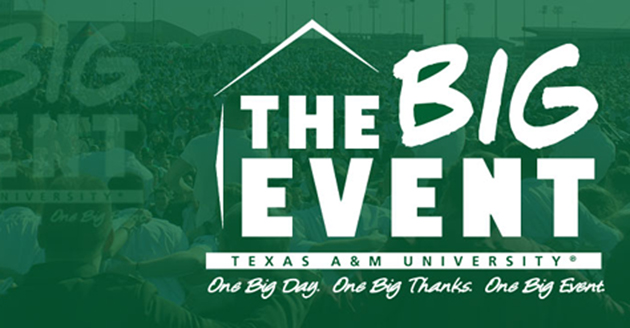

Throughout my time as a student at A&M, I have participated in many service events to give back to the community of College Station. One of them being a canned food drive through my men's organization (more information in About Me). I have also participated in Aggie Replant, which is a day where aggies come together to help plant trees around the College Station area. Every year, I participate in The Big Event which is the largest one day student run service project in the nation. During Big Event, we help give back to those in College Station through tasks varying from yard work to painting.
